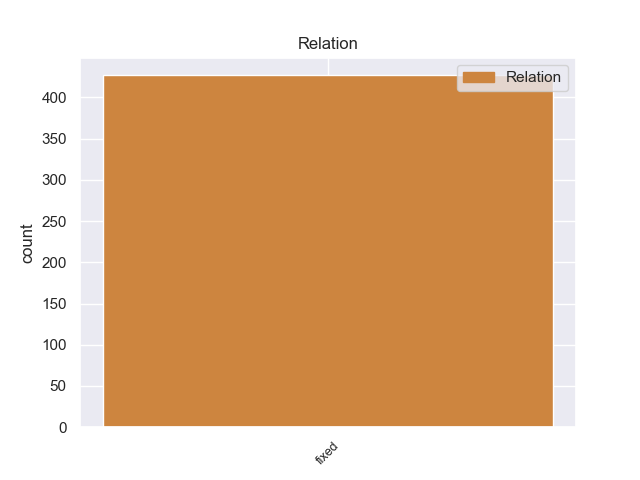
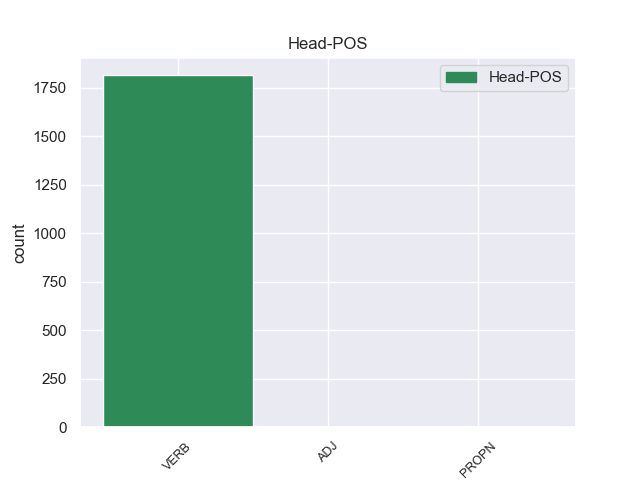
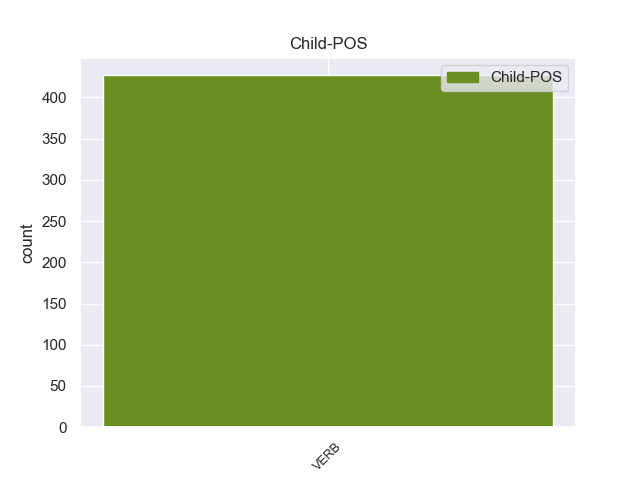

Distribution of features within this leaf



Morphosyntax Rules sorted by frequency.
- When the dependent token is the fixed multiword expression(fixed) of the head token, and the head token is PRON the Tense needs to be Pres.
1 А _ _ _ _ 0 _ _ _
2 в _ _ _ _ 0 _ _ _
3 Иркутске _ _ _ _ 0 _ _ _
4 переломилось _ _ _ _ 0 _ _ _
5 не _ _ _ _ 0 _ _ _
6 только _ _ _ _ 0 _ _ _
7 мое _ _ _ _ 0 _ _ _
8 комнатное _ _ _ _ 0 _ _ _
9 существование _ _ _ _ 0 _ _ _
10 - _ _ _ _ 0 _ _ _
11 домашний _ _ _ _ 0 _ _ _
12 зверек _ _ _ _ 0 _ _ _
13 увидел _ _ _ _ 0 _ _ _
14 , _ _ _ _ 0 _ _ _
15 как _ _ _ _ 0 _ _ _
16 огромен _ _ _ _ 0 _ _ _
17 , _ _ _ _ 0 _ _ _
18 многообразен _ _ _ _ 0 _ _ _
19 , _ _ _ _ 0 _ _ _
20 сложен _ _ _ _ 0 _ _ _
21 мир _ _ _ _ 0 _ _ _
22 , _ _ _ _ 0 _ _ _
23 свершился _ _ _ _ 0 _ _ _
24 переход _ _ _ _ 0 _ _ _
25 от _ _ _ _ 0 _ _ _
26 младенческой _ _ _ _ 0 _ _ _
27 всеядности _ _ _ _ 0 _ _ _
28 к _ _ _ _ 0 _ _ _
29 отбору _ _ _ _ 0 _ _ _
30 , _ _ _ _ 0 _ _ _
31 то то PRON _ Animacy=Inan|Case=Nom|Gender=Neut|Number=Sing 0 _ _ _
32 есть быть VERB _ Aspect=Imp|Mood=Ind|Number=Sing|Person=3|Tense=Pres|VerbForm=Fin|Voice=Act 31 fixed 31:fixed _
33 к _ _ _ _ 0 _ _ _
34 характеру _ _ _ _ 0 _ _ _
35 . _ _ _ _ 0 _ _ _
non-conforming Examples:
1 При _ _ _ _ 0 _ _ _
2 свете _ _ _ _ 0 _ _ _
3 она _ _ _ _ 0 _ _ _
4 говорила _ _ _ _ 0 _ _ _
5 без _ _ _ _ 0 _ _ _
6 умолку _ _ _ _ 0 _ _ _
7 и _ _ _ _ 0 _ _ _
7.1 _ _ _ _ _ 0 _ _ _
1 В _ _ _ _ 0 _ _ _
2 тот _ _ _ _ 0 _ _ _
3 момент _ _ _ _ 0 _ _ _
4 подавляющая _ _ _ _ 0 _ _ _
5 часть _ _ _ _ 0 _ _ _
6 элиты _ _ _ _ 0 _ _ _
7 не _ _ _ _ 0 _ _ _
8 верила _ _ _ _ 0 _ _ _
9 в _ _ _ _ 0 _ _ _
10 способность _ _ _ _ 0 _ _ _
11 Ельцина _ _ _ _ 0 _ _ _
12 передать _ _ _ _ 0 _ _ _
13 власть _ _ _ _ 0 _ _ _
14 кому кто PRON _ Animacy=Anim|Case=Dat|Gender=Masc|Number=Sing 0 _ _ _
15 бы _ _ _ _ 0 _ _ _
16 то _ _ _ _ 0 _ _ _
17 ни _ _ _ _ 0 _ _ _
18 было быть VERB _ Aspect=Imp|Gender=Neut|Mood=Ind|Number=Sing|Tense=Past|VerbForm=Fin|Voice=Act 14 fixed 14:fixed SpaceAfter=No
19 . _ _ _ _ 0 _ _ _
1 Из-за _ _ _ _ 0 _ _ _
2 отсутствия _ _ _ _ 0 _ _ _
3 в _ _ _ _ 0 _ _ _
4 России _ _ _ _ 0 _ _ _
5 у _ _ _ _ 0 _ _ _
6 кого кто PRON _ Animacy=Anim|Case=Ins|Gender=Masc|Number=Sing 0 _ _ _
7 бы _ _ _ _ 0 _ _ _
8 то _ _ _ _ 0 _ _ _
9 ни _ _ _ _ 0 _ _ _
10 было быть VERB _ Aspect=Imp|Gender=Neut|Mood=Ind|Number=Sing|Tense=Past|VerbForm=Fin|Voice=Act 6 fixed 6:fixed _
11 какой-либо _ _ _ _ 0 _ _ _
12 идеологии _ _ _ _ 0 _ _ _
13 переходное _ _ _ _ 0 _ _ _
14 время _ _ _ _ 0 _ _ _
15 может _ _ _ _ 0 _ _ _
16 оказаться _ _ _ _ 0 _ _ _
17 более _ _ _ _ 0 _ _ _
18 плавным _ _ _ _ 0 _ _ _
19 . _ _ _ _ 0 _ _ _
1 " _ _ _ _ 0 _ _ _
2 В _ _ _ _ 0 _ _ _
3 эту _ _ _ _ 0 _ _ _
4 профессию _ _ _ _ 0 _ _ _
5 идет _ _ _ _ 0 _ _ _
6 кто кто PRON _ Case=Nom 0 _ _ _
7 попало попасть VERB _ Aspect=Perf|Gender=Neut|Mood=Ind|Number=Sing|Tense=Past|VerbForm=Fin|Voice=Act 6 fixed 6:fixed SpaceAfter=No
8 " _ _ _ _ 0 _ _ _
9 . _ _ _ _ 0 _ _ _
1 Граждане _ _ _ _ 0 _ _ _
2 нашей _ _ _ _ 0 _ _ _
3 страны _ _ _ _ 0 _ _ _
4 хотят _ _ _ _ 0 _ _ _
5 жить _ _ _ _ 0 _ _ _
6 без _ _ _ _ 0 _ _ _
7 страха _ _ _ _ 0 _ _ _
8 за _ _ _ _ 0 _ _ _
9 своё _ _ _ _ 0 _ _ _
10 будущее _ _ _ _ 0 _ _ _
11 , _ _ _ _ 0 _ _ _
12 с _ _ _ _ 0 _ _ _
13 уверенностью _ _ _ _ 0 _ _ _
14 , _ _ _ _ 0 _ _ _
15 что _ _ _ _ 0 _ _ _
16 возникающие _ _ _ _ 0 _ _ _
17 спорные _ _ _ _ 0 _ _ _
18 вопросы _ _ _ _ 0 _ _ _
19 будут _ _ _ _ 0 _ _ _
20 решаться _ _ _ _ 0 _ _ _
21 справедливо _ _ _ _ 0 _ _ _
22 и _ _ _ _ 0 _ _ _
23 на _ _ _ _ 0 _ _ _
24 основе _ _ _ _ 0 _ _ _
25 действующего _ _ _ _ 0 _ _ _
26 законодательства _ _ _ _ 0 _ _ _
27 , _ _ _ _ 0 _ _ _
28 а _ _ _ _ 0 _ _ _
29 не _ _ _ _ 0 _ _ _
30 по _ _ _ _ 0 _ _ _
31 " _ _ _ _ 0 _ _ _
32 понятиям _ _ _ _ 0 _ _ _
33 " _ _ _ _ 0 _ _ _
34 кого кто PRON _ Animacy=Anim|Case=Ins|Gender=Masc|Number=Sing 0 _ _ _
35 бы _ _ _ _ 0 _ _ _
36 то _ _ _ _ 0 _ _ _
37 ни _ _ _ _ 0 _ _ _
38 было быть VERB _ Aspect=Imp|Gender=Neut|Mood=Ind|Number=Sing|Tense=Past|VerbForm=Fin|Voice=Act 34 fixed 34:fixed SpaceAfter=No
39 . _ _ _ _ 0 _ _ _